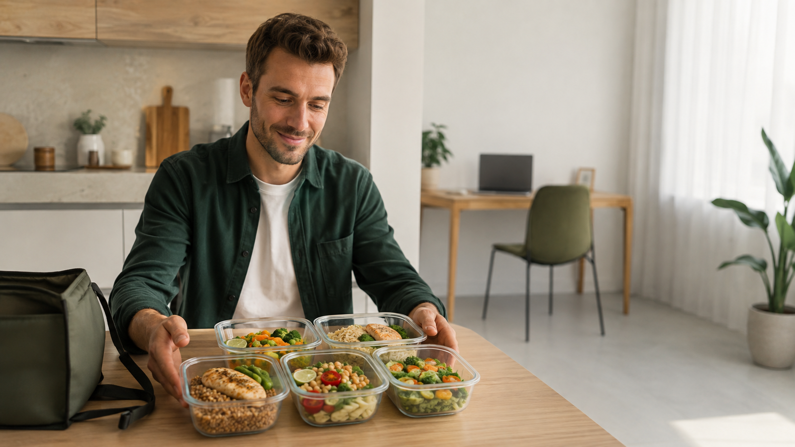

Инвестиционная презентация
Идея, рынок, экономика и финансирование — для первого просмотра.
Скачать презентациюSTIMUL FOOD начинает с одного города, одного основного рациона и понятной цели: доказать повторную покупку и устойчивую экономику до масштабирования.
Конфиденциально. Распространение материалов допускается только с согласия Маркова Павла Андреевича.

Планирование, закупка, готовка и ежедневный выбор отнимают время и внимание.
Один готовый комплект на день, заранее понятное меню и стандартизированный процесс.
Платный пилот измеряет первый заказ, повтор, себестоимость, доставку и списания.
База 60 рационов в рабочий день требует примерно 200–260 активных покупателей при 6–8 покупках в месяц. Это около четверти процента населения города.
Локальная география снижает длину маршрута, позволяет лично контролировать кухню и быстрее исправлять продукт.

средняя цена по текущей структуре пакетов
сырьё при малом объёме
целевой вклад при устойчивом объёме
безубыточность при целевой себестоимости
Показатели являются расчётом на основе рецептур, открытых цен и целевых условий закупки. Договорные цены кухни и поставщиков заменяют расчётные значения перед запуском.
При 15–25 рационах кухня, упаковка и доставка дорогие. При 40–60 рационах стоимость на один день снижается, а маршрут становится плотнее.
расчётная маржа пилота при малом объёме
целевая маржа при устойчивом объёме
рационов в день для операционной безубыточности с рекламой
объём, на котором появляется заметный запас прочности
Финансирование покрывает технологическую подготовку, кухню, упаковку, продвижение и запас денег до выхода на устойчивый объём.
Проработка 70 карт, контрольные готовки, расчёт выходов, пищевой ценности, аллергенов и маркировки.
Депозит кухни, тестовая смена, санитарные материалы, первая закупка сырья.
Контейнеры, крафт-короб, этикетки, термопринтер/расходники, транспортные тесты.
Термосумки, термометры, маршрутные тесты, резерв на курьерскую доставку.
Фотосъёмка фактического продукта, рекламные тесты, партнёрские размещения, печатные материалы.
Сырьё, кухня, упаковка, доставка и текущие расходы в период набора объёма.
Регистрация/договоры, бухгалтерская настройка, платёжный сервис, кассовый контур.
Отклонения цен, повторные тесты и непредвиденные расходы.
Кухня, рецептуры, упаковка, контрольная готовка, маркировка и маршрут.
Первые покупатели, фактическая себестоимость, доставка, отзывы и повтор.
40–60 рационов в день, понятная стоимость привлечения и положительный денежный поток.
Идея, рынок, экономика и финансирование — для первого просмотра.
Скачать презентациюПолная логика продукта, производства, продаж, денег и развития.
Скачать бизнес-планИсходные данные, 36 месяцев, 13 недель и анализ чувствительности.
Скачать модельМатериалы предназначены для адресного ознакомления. Копирование и пересылка третьим лицам — только с согласия автора.
Оставьте контакт и укажите, какой блок интересует: продукт, производство, экономика или формат участия.